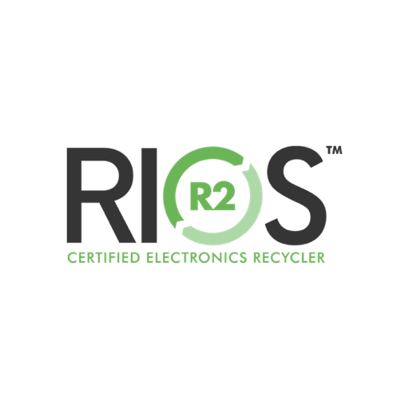
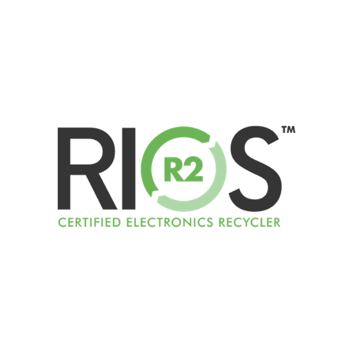

Certification and Trust
Go Hand In Hand
Anyone can claim to responsibly and securely dispose of your IT assets. But, before you trust your company’s “DNA” to just anyone, make sure that their data destruction and recycling processes are certified by key organizations in the ITAD industry. These certifications are the only way to ensure your data is protected, and help avoid your company being held accountable for illegal disposal.


Are Industry Certifications
Really That Important?
Considering the private information and precious and toxic materials your IT assets contain, you can’t afford to partner with an IT lifecycle management firm that doesn’t invest in certifying its processes. It’s one thing to say you safely and responsibly destroy data and recycle hardware. It’s another to invest the time and effort it takes to prove it. ZER0trace has invested heavily in our processes. We’ve put those systems under the scrutiny of organizations that certify our ITAD processes are secure, safe, ethical and legal.
Don't all IT Asset Recyclers
require Certification?
Absolutely not, which is why many companies working with a recycler are shocked when they receive official notification of a data breach or legal action connected to illegal dumping. The certification process happens in stages. An EPA number on a certificate isn’t enough to ensure the company is protecting your data.
A Single Data Breach Violates State and Federal Regulations.
HIPAA (Health Insurance Portability and Accountability Act)
GLBA (Gramm-Leach-Bliley Act)
FISMA (Federal Information Security Management Act)
FACTA (Fair and Accurate Credit Transactions Act)
OMB Memo (M06-16)
Sarbanes-Oxley Act Section 404
HITECH (Health Information Technology for Economic and Clinical Health Act)
PHI (Protected Health Information)
PCI (Payment Card Industry)
NERC (North American Electric Reliability Corporation
---------------------------------------------------------------------
HIPAA, HITECH, PHI, PCI, PII, FACTA, GLBA and Sarbanes-Oxley regulations governing industries such as banking, finance, healthcare and government present chain of custody problems for companies. ZER0Trace's on-site data destruction, either Virtually or Physically, solves those challenges by giving you tailored solutions that meet internal, state, and federal compliancy needs. ZER0trace offers both Virtual and Physical data destruction.
60% of all data breaches occur at the business associate (your vendors) level. Trusting data destruction requirements to anyone other than a company that is vetted, audited, and certified can be expensive after a data breach. ZER0trace on-site data destruction ensures your assets never leave your sight before the data they contain is destroyed, eliminating the threat of a breach.
 
